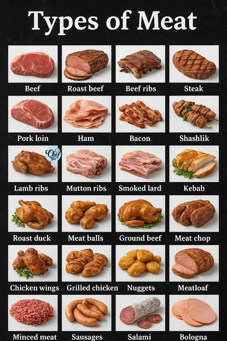
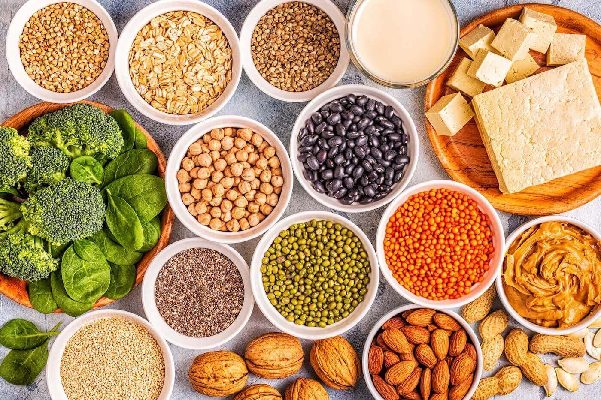
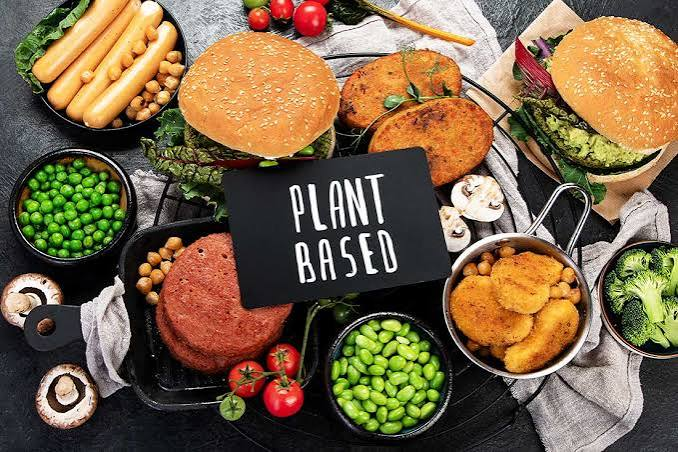
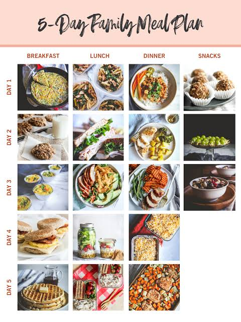
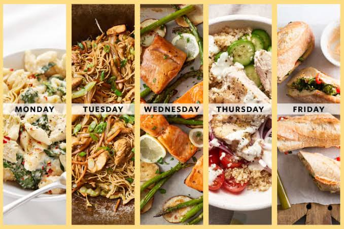
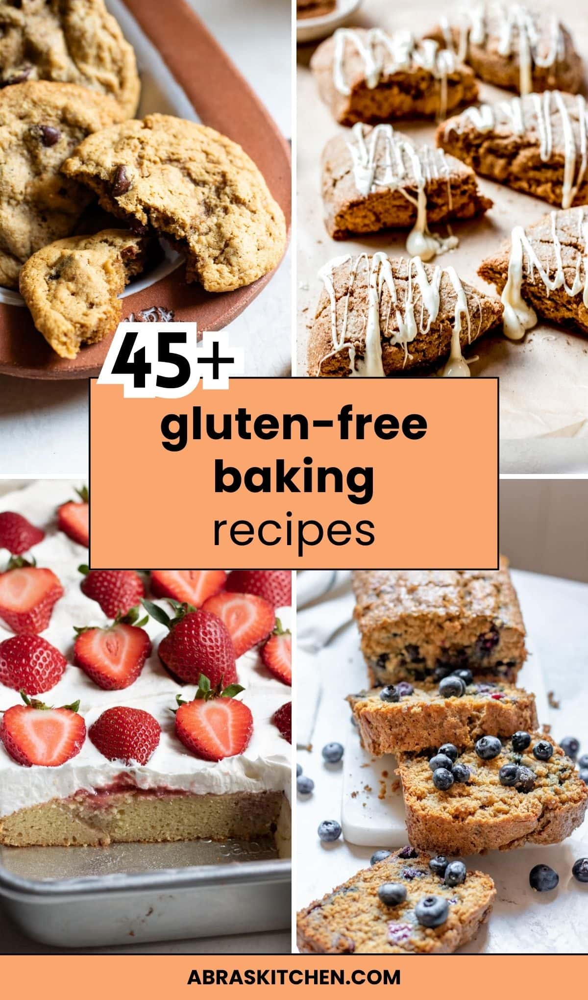

Welcome to the Organic Table fresh food store, where we sell many different types of ingredients to make fresh meals, natural foods, etc.
Locations
- St. Louis
- New York
Here are a list of delivery options here:
- Meat
- Vegetarian
- Vegan
- Family
- Couples
- Gluten-Free
Meat
We have a variety of meat options for you to choose from, including beef, chicken, pork, and more. All of our meat is sourced from local farms and is free from hormones and antibiotics.

Vegetarian
Our vegetarian options include a wide range of fresh vegetables, fruits, grains, and legumes. We also offer plant-based protein sources such as tofu and tempeh.

Vegan
For our vegan customers, we provide a variety of plant-based products, including dairy alternatives, vegan snacks, and cruelty-free beauty products.

Family
Our family meal options are designed to provide nutritious and delicious meals for the whole family. We offer meal kits, ready-to-eat meals, and bulk ingredients for larger households.

Couples
For couples, we offer meal plans and ingredients that are perfect for two. Our options include romantic dinner kits, date night specials, and healthy meal options for busy couples.

Gluten-Free
We understand the importance of gluten-free options for those with dietary restrictions. Our gluten-free selection includes bread, pasta, snacks, and baking ingredients that are safe for those with celiac disease or gluten sensitivity.
